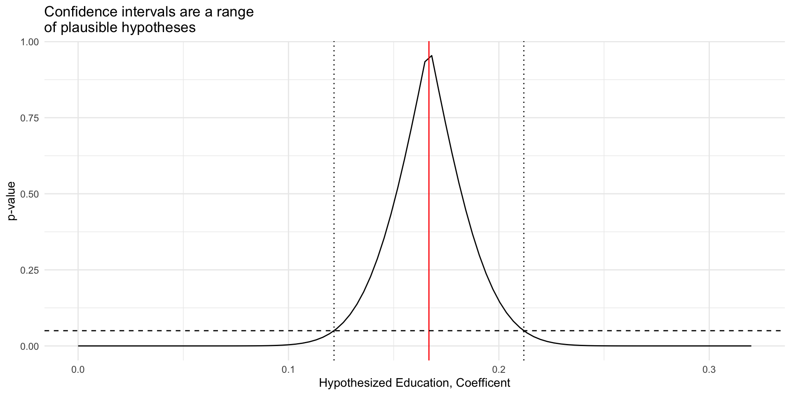
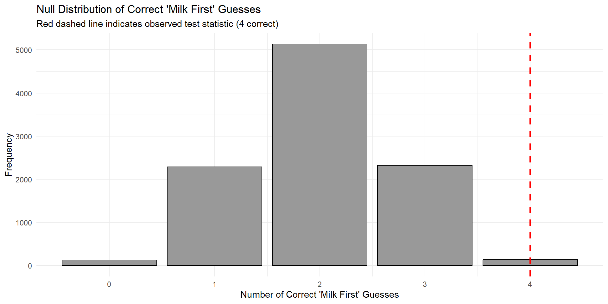
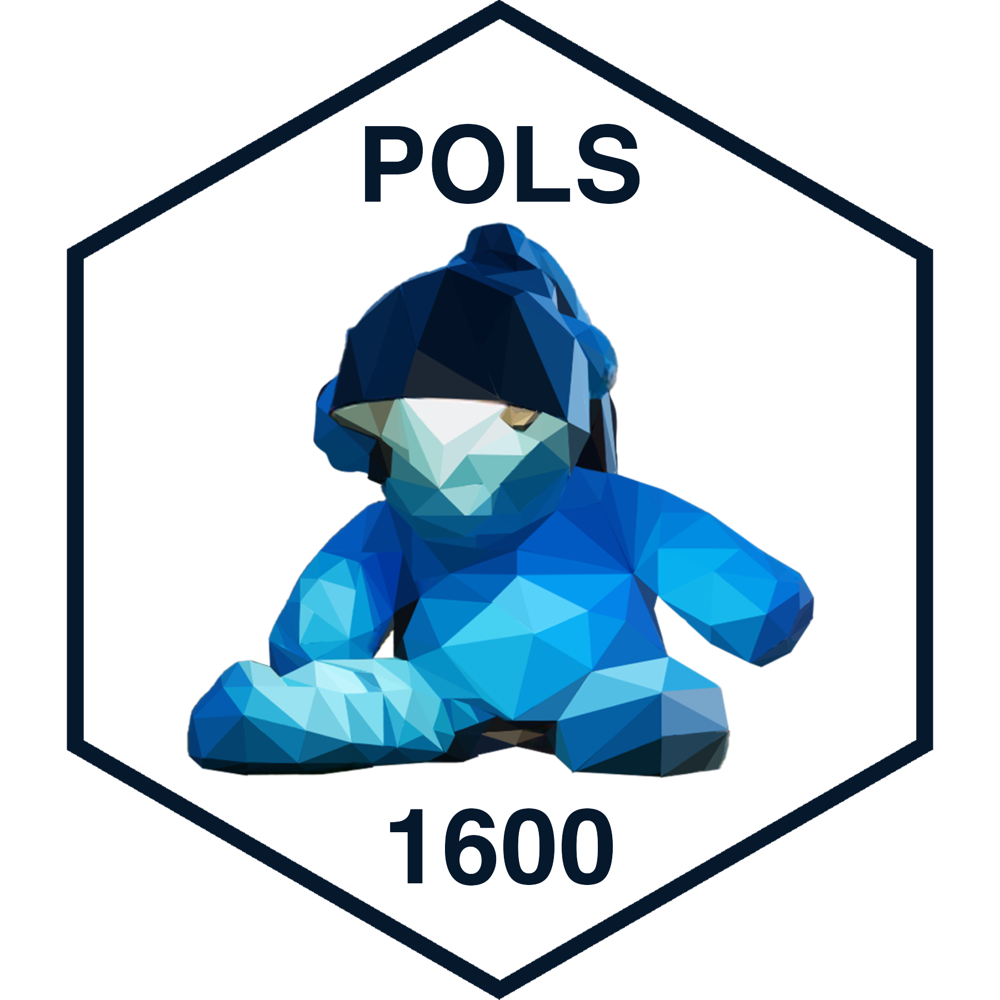

# Load Data
load(url("https://josephessig-source.github.io/pols1600_site/files/data/nes24.rda"))
# Fit Model
m1 <- lm_robust(dv_participation ~ education + income, df,
se = "classical")
# Range of hypotheses for education
pval_ci_df <- tibble(
# Hypothesized Betas for Education
Hypothesis = seq(0, .32, length.out = 100),
# Test Statistics
Statistic = (m1$coefficients["education"] - Hypothesis) /
m1$std.error["education"],
# P-value for two sided test
`p-value` = 2*pt(abs(Statistic), df = m1$df,lower.tail = F)
)
fig_pval_ci <- pval_ci_df %>%
ggplot(aes(Hypothesis, `p-value`))+
geom_line()+
geom_vline(xintercept = m1$coefficients["education"],
linetype = "solid",
col = "red")+
geom_vline(xintercept = m1$conf.low["education"],
linetype = "dotted")+
geom_vline(xintercept = m1$conf.high["education"],
linetype = "dotted")+
geom_hline(yintercept = 0.05,
linetype = "dashed")+
labs(
x = "Hypothesized Education, Coefficent",
title = "Confidence intervals are a range\nof plausible hypotheses"
)+
theme_minimal()POLS 1600
Statistical Inference & Uncertainty II
Updated Apr 13, 2026
Overview
Class Plan
- Announcements
- Statistical Inference/Hypothesis Testing Continued
- Discussion of Final Projects and Friday’s Lab
Announcements
- Lab 11 this week - give and receive feedback on your projects.
- Final 2 lectures (Wednesday, Monday) - course review.
- Assignment 4 due Sunday April 19th
- Next Wednesday, April 22, Work on converting draft into presentation
Review
Sampling Distributions and Standard Errors
A sampling distribution is a theoretical probability distribution of estimates obtained from taking repeated samples of size \(n\) from some population
- A distribution of what we could have seen
A standard error is simply the standard deviation (\(\sigma\)) of the sampling distribution of an estimator.
- A measure of how much our estimate could have varied.
Law of Large Numbers: As \(N \to \infty\) \(\bar{x} \to \mu\)
Central Limit Theorem: As \(N \to \infty\) \(\bar{x} \sim \mathcal{N}(\mu, \frac{\sigma^2}{n})\)
Confidence Intervals
Confidence intervals provide a range of plausible values for our estimate
- Three components:
- Point Estimate (i.e. a mean, or coefficient)
- Confidence Level (Often 95 percent by convention)
- Margin of Error (+/- some range (typically 1.96*SE for 95 percent CI))
- Confidence is about the interval
- 95 percent of the intervals constructed in this manner would contain the true parameter in repeated samples.
Hypothesis Testing
A hypothesis test quantifies how likely it is that we would observe what we did (our test statistic), if some claim about the world were true (our hypothesis, typically a null ).
If our claim were true, then under this null hypothesis, our test statistic would have a distribution centered around the null value.
A p-value which describes the probability of observing a test statistic as extreme or more extreme in a world where our null hypothesis was true
If our p-value is small (\(p < 0.05\)), we reject the null hypothesis
If our p-value is large (\(p > 0.05\)), we fail to reject the null, or retain the null hypothesis
Relationship between CIs and Hypothesis Testing
We can think of a confidence interval as a range of hypotheses we would fail to reject with \(p < \alpha\)
If a \(95\%\) confidence interval excludes 0, the corresponding two-sided hypothesis test will reject at \(\alpha = 0.05\)
| Model 1 | |
|---|---|
| (Intercept) | 0.31* |
| [ 0.14; 0.48] | |
| education | 0.17* |
| [ 0.12; 0.21] | |
| income | 0.01 |
| [-0.01; 0.03] | |
| R2 | 0.04 |
| Adj. R2 | 0.04 |
| Num. obs. | 1687 |
| RMSE | 1.29 |
| * 0 outside the confidence interval. | |

Four Possible Outcomes of a hypothesis Test
- False Positive: (Type I Error)
- Rejecting a True \(H_0\).
- \(\tau = 0\), but \(\hat{\tau}\) has a \(p<0.05\)
- Probability=\(\alpha\)
- True Positive: (Correct Decision)
- Rejecting a false \(H_0\):
- \(\tau \neq 0\), and \(\hat{\tau}\) has a \(p<0.05\)
- Occurs with Probability = \(1-\beta\)
- True Negative: (Correct Decision)
- Failing to reject a True \(H_0\):
- \(\tau = 0\), and \(\hat{\tau}\) has a \(p>0.05\)
- Occurs with Probability = \(1-\alpha\)
- False Negative: (Type II Error)
- Failing to reject a false \(H_0\).
- \(\tau \neq 0\) but \(\hat{\tau}\) has a \(p>0.05\)
- Occurs with Probability= \(\beta\)
Type 1 and 2 Errors

Statistical Power
Statistical Power
- Consider two distributions of statistics under
- a null of no effect (\(H_0\))
- an effect of \(\tau\) (\(H_1\))
- For a significance threshold of \(\alpha\) we would:
- Fail to reject the null \(\beta\) (Type II Errors)
- Correctly reject the null \(1 -\beta\) (Statistical Power)
Try changing \(\tau\) (the effect size), and se (the standard deviation of the effect)
Power is a function of:
- Sample size (\(N\))
- Larger samples, smaller standard errors (LLN)
- Effect size (\(\tau\))
- Bigger effects less overlap
- Significance threshold (\(\alpha\))
- Decrease Type 1 (False Positives) error leads to increased Type 2 (False Negatives)
- The distribution of the data
- Variance, asymptotic approximations
Paths to Statistical Inference
Whether we use math, bootstrapping, or shuffling, the goal of statistical inference is exactly the same: quantifying our uncertainty.
- 1. Asymptotic Inference
- We use the Central Limit Theorem and to assume a theoretical distribution (like the \(t\)-distribution).
- Compare the observed test statistic to the assumed sampling distribution under the null.
- Best for: Large samples with well-behaved data. Very fast.
- 2. Bootstrapping (Using Resampling)
- We draw new samples with replacement from our data to mimic drawing new samples from the population.
- Compare the observed test statistic to the empirical approximation of the sampling distribution.
- Best for: Constructing Confidence Intervals and Standard Errors without relying on strict assumptions.
- 3. Randomization Inference (Permutation)
- We shuffle the treatment labels without replacement to simulate a world where the treatment has no effect.
- Centers on the null hypothesis.
- Best for: Calculating exact \(p\)-values and testing hypotheses, especially in experiments with small samples.
Randomization Inference
The Lady Tasting Tea
- The Claim: In the 1920s, Dr. Muriel Bristol claimed she could taste whether milk or tea was poured into her cup first.
- The Experiment: Ronald Fisher prepared 8 cups of tea.
- 4 had milk poured first.
- 4 had tea poured first.
- The cups were presented in a random, blinded order.
- The Task: Identify the 4 cups that had milk poured first.
- The Null Hypothesis (\(H_0\)): She has no tasting ability; she is just guessing blindly.
Permutations
- If she is just guessing (\(H_0\) is true), her choices are completely independent of the actual cups.
- How many possible ways can she choose 4 cups out of 8? \[ \binom{8}{4} = \frac{8!}{4!(8-4)!} = 70 \]
- If she is guessing blindly, every one of these 70 combinations is equally likely.
- If she gets all 4 correct, what is the probability of that happening by chance? 1/70 ≈ 0.014.
- Because 0.014 < 0.05, we reject the null hypothesis!
Simulating the Null Distribution
We can simulate this process in R by randomly shuffling (permuting) the “Milk First” labels while holding her guesses constant, we generate a distribution of the test statistic under the null.
This is exactly what we do in randomization inference.
Code
# 1. Setup the actual truth (4 milk, 4 tea)
truth <- c(rep("Milk", 4), rep("Tea", 4))
# 2. Assume she got them all right (her guesses exactly match the truth)
lady_guesses <- c(rep("Milk", 4), rep("Tea", 4))
# 3. Create a function to simulate one random guess
simulate_guess <- function() {
shuffled_truth <- sample(truth, replace = FALSE)
# Calculate test statistic: number of correctly identified "Milk" cups
correct_milk <- sum(shuffled_truth == "Milk" & lady_guesses == "Milk")
return(correct_milk)
}
# 4. Repeat 10,000 times to build the null distribution
set.seed(1600)
null_distribution <- tibble(
sim = 1:10000,
correct_milk = replicate(10000, simulate_guess())
)
# 5. Plot
fig_tea <- null_distribution %>%
ggplot(aes(x = correct_milk)) +
geom_bar(fill = "grey60", color = "black") +
geom_vline(xintercept = 4, color = "red", linetype = "dashed", linewidth = 1) +
theme_minimal() +
scale_x_continuous(breaks = 0:4) +
labs(
title = "Null Distribution of Correct 'Milk First' Guesses",
subtitle = "Red dashed line indicates observed test statistic (4 correct)",
x = "Number of Correct 'Milk First' Guesses",
y = "Frequency"
)Plot

Putting It All Together
- Inference is about uncertainty: We only have one sample, but we want to learn about the population.
- Standard Errors: Tell us how much our estimate would vary if we took new samples.
- Confidence Intervals: Give us a plausible range for the true population parameter based on our sample estimate and its standard error.
- Hypothesis Testing & P-values: Help us quantify the evidence against a specific baseline claim (the null hypothesis \(H_0\)).
- Power: Reminds us that sample size and effect size dictate our ability to detect the truth.
Final Projects
Structure of Final Paper and Drafts
Assignment 4: Seven sections
- Introduction (5 percent, ~ 4 paragraphs)
- Theory and Expectations (10 percent, ~4+ paragraphs)
- Data (20 percent ~ 4+ paragraphs)
- Design (25 percent ~ 5+ paragraphs)
- Results (25 percent ~ 5+ paragraphs)
- Conclusion (5 percent ~ 3+ paragraphs)
- Appendix (10 percent ~ Variable codebook and all the R code for your project)
For Friday
Make progress on:
- Data (20 percent ~ 4+ paragraphs)
- Design (25 percent ~ 5+ paragraphs)
- Results (25 percent ~ 5+ paragraphs)
For Friday
See Lab 11 - Peer Workshop on Final Papers
You are not expected to have a full draft of your paper. Instead, your group should be prepared to briefly explain:
- Your research question
- Your main hypothesis (what you expect to find)
- Your data source(s)
- Your key variables (dependent + main independent variable(s))
- Your planned empirical strategy (what models or comparisons you will run)
- One area where you feel uncertain or would like feedback
The HTML files you submitted for assignments 2 and 3 should be helpful here, and you may want to present them (or parts of them) in addition to a verbal discussion.
Course Review
Types of inference
Descriptive
Causal
Predictive
Descriptive Inference
Summarize distributions and relationships in data
Data Wrangling
The process of transforming data into a useable format
You should know how to:
- Load, look at,and transform data into R
- Get a HLO of the raw data:
- Unit of observation
- Dimensions of the data
- Quickly summarize the distributions and values of variables
- Recode data to:
- Replace values as
NAs - Create categories, indicators (0,1), and factors
- Transform predictors (e.g. standardizing predictors)
- Replace values as
- Reshape the data
- Pivoting columns and rows
- Joining data sets together.
- Aggregate the data into summaries
Data Visualization
A tool for describing distributions and relationships
You should know:
- The grammar of graphics:
- Data
- Aesthetic mappings
- Geometries
- How to generate common plots to describe:
- Distributions
- Relationships
Causal Inference
Causal Inference requires counterfactual comparisons
You should know:
Bias caused by:
- Confounding (Coffee and Cancer)
- Colliding (Dating Jerks)
Casual Identification in:
- Experimental designs
- Observational designs
Prediction with Linear Models
Linear regression provides a linear estimate of the conditional expectation function
You should know:
What it means to control for predictors in a multiple regression
How to translate substantive claims into empirical expectations for our models
How to estimate and interpret these models using tables and figures
How to quantify uncertainty about these estimates using confidence intervals and hypothesis tests.
Probability
Probability describes the likelihood of an event
Random variables assign numeric values to all the events that could occur.
Probability distributions assign probabilities to every value of a random variable. Can be:
- discrete
- continuous
- characterized by their expected values and variances
- used to:
- describe the data generating process
- quantify uncertainty about estimates
Regression
Controlling for Variables & Residualized Regression
Regression models partition the variance in the outcome into variance explained by the model and unexplained variance (residuals)
You should know:
- The logic of residualized regression. You can isolate the effect of \(X_1\) on \(Y\) by regressing the residuals of \(Y\) (unexplained by \(X_2\)) on the residuals of \(X_1\) (unexplained by \(X_2\)).
- Properties of Residuals: Residuals (\(\hat{\epsilon}\)) are orthogonal to (uncorrelated with) both the predictors and the predicted values.
- Why coefficients change Controlling for a new variable only changes the coefficient of an existing predictor if the new variable is correlated with both the predictor and the outcome.
Predictions and Model Fit
Regression coefficients define a formula to generate predicted values, while fit statistics summarize how well the model explains the data
You should know:
- Generating predictions: How to use
expand_grid()to hold variables constant andpredict()to generate expected values, which is especially useful for interpreting polynomials or interaction terms. - R-squared (\(R^2\)): The proportion of variance in the outcome explained by the model (\(ESS/TSS\)).
- Standardization: Why we convert variables to z-scores (mean 0, standard deviation 1) to compare coefficients on a common scale.
Difference-in-Differences (DiD)
Diff in Diff estimates causal effects by comparing the change in outcomes over time between a treated group and a control group
You should know:
- Diff in Diff: How differencing twice isolates the treatment effect by removing fixed differences across units (Treated vs. Control) and fixed changes over time (Post vs. Pre).
- Average Treatment on Treated (ATT): The specific causal quantity estimated (\(E[Y_{1i}(1) - Y_{0i}(1)|D=1]\)).
- Parallel Trends Assumption: The crucial identifying assumption that, absent treatment, the treated group would have followed the exact same trajectory as the control group.
- Regression Implementation: How to estimate DiD using a linear model (\(Y = \beta_0 + \beta_1 Post + \beta_2 Treated + \beta_3 Post \times Treated\)), where the interaction term (\(\beta_3\)) provides the ATT.
The Law of Large Numbers (LLN)
As sample size increases, the sample mean converges to the true population mean
You should know:
- The core intuition: Why an unbiased estimate improves and its variance decreases as the sample size grows.
- Mathematical formulation: How the distance between the sample mean and the population mean \(\mu\) approaches 0 as \(n \to \infty\).’
See these slides
The Central Limit Theorem (CLT)
The sampling distribution of the mean approaches a Normal distribution as sample size grows, regardless of the population’s underlying distribution
You should know:
- Sampling distributions: What they are and how their width (variance) decreases as sample size increases.
- Standardization: How to calculate and interpret Z-scores (\(Z=\frac{X-\mu}{\sigma}\)).
- Properties of the sample mean: Understanding that \(E[\bar{X}_n]=\mu\) and \(Var[\bar{X}_n]=\frac{\sigma^2}{n}\).
- Normal approximation: How the CLT allows us to conduct statistical inference regardless of the shape of the population distribution.
See these slides
Standard Errors and Variance
Standard errors quantify uncertainty by estimating the standard deviation of a sampling distribution
You should know:
- Variance of regression coefficients: How it depends on the residuals in your model.
- Homoskedasticity vs. Heteroskedasticity: Recognizing the difference between constant error variance (\(\sigma^2\)) and non-constant error variance.
- Robust Standard Errors: Why we use functions like
lm_robust()to calculate consistent standard errors (or cluster them by group) when error variance is not constant.
See these slides
Estimating Uncertainty: Simulation vs. Analytic
Bootstrapping can be used to obtain a standard error and confidence intervals using resampling.
To make inferences about a population, we need to understand the sampling distribution and Standard Error (SE). There are two main ways to do this:
Simulation (Bootstrapping): Treat your observed sample as if it were the true population. Draw repeated samples with replacement to create a “resampling distribution.”
- Calculating SE: The Standard Error is the standard deviation of this simulated resampling distribution (the “plug-in principle”).
Analytic (Asymptotic): Relies on statistical theory (Law of Large Numbers & Central Limit Theorem), which state that sampling distributions approach a normal distribution as sample size grows.
Sampling Distributions and Statistical Inference
See also the earlier slides in this presentation on:
Confidence Intervals
Sampling Distributions
Hypothesis Testing
Statistical Power
Randomization Inference

POLS 1600
Comments
The bar chart represents the sampling distribution of our test statistic if the null hypothesis were true (she is randomly guessing).
The red line represents our observed test statistic (she guessed all 4 correctly).
Notice how rare it is to get 4 correct by chance! Only about 1.4% of our 10,000 simulations resulted in 4 correct guesses. This simulation matches the exact math (1/70 = 0.014), yielding a \(p\)-value of 0.014.